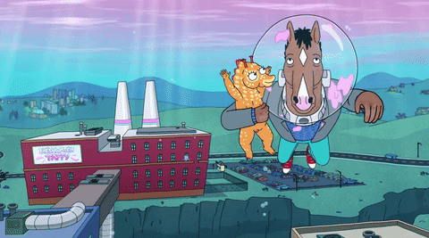

Terceira Temporada
O cartaz desta temporada, traz uma lista de nomes, comparando BoJack a Tony Soprano (The Sopranos), Don Draper (Mad Men) e Frank Underwood (House of Cards), todos anti-heróis de suas séries, que conseguem fazer com que o telespectador sinta raiva de ações feitas pelas personagens (como as diversas vezes que Don Draper trai a sua mulher), mas que também fazem você sentir pena e a torcer para eles em algum momento (como as vezes que você torce para Walter White conseguir se dar bem com seu negócio ilegal), e BoJack consegue se igualar a eles nesse quesito, o personagem prova ser um escroto diversas vezes (ficando com a amiga de Todd), mas faz você sentir pena em alguns momentos (como sua despedida de um filhote marinho). Outra relação estabelecida entre Tony Soprano e BoJack, é a terapia. Enquanto o mafioso tinha horário marcado com sua terapeuta toda semana, BoJack passa a fazer ligações para conversar com uma mulher que dá conselhos a ele.
O ponto mais forte da série em todas suas temporadas, são os assuntos que tratados, como depressão e alcoolismo. Este ano, a série continua com essa carga em cima de BoJack, trazendo tudo que ele carrega desde o final da segunda temporada. Alguns episódios conseguem abordar assuntos polêmicos atuais, como o feminismo e a discussão do certo e errado do aborto. No sexto episódio (“Tat-Tat, Pum Pum”) é falado sobre o aborto, e em uma cena onde faz uma clara critica a situação atual, onde um apresentador de um programa está discutindo sobre isso, e para isso, ele chama “três homens brancos de terno” (a frase é dita pelo apresentador), para dar a opinião deles sobre o tema, que acabam não concordando com o ato de abortar, e acham “que não é um problema de mulheres”. Outro assunto tratado é a burocracia nos bastidores do marketing e da campanha de divulgação de um filme, onde BoJack é muitas vezes controlado pelos seus agentes.
Os últimos três episódios da temporada conseguem formam uma sequência de ótimos momentos. Focando totalmente em BoJack e como ele lida com seus problemas, não conseguindo aceitar o que seus amigos falam sobre ele estar se importando só com ele mesmo, não ligando se suas ações vão ou não magoar os outros, não ligando se ele está levando outras pessoas para o fundo do poço com ele, não ligando que existem pessoas a sua volta que se importam com ele. A cena final da temporada revela que BoJack não fez a única coisa que devia ter feito na sua vida, ser um cavalo. A comparação da cena fica com as pessoas que esquecem de ser “humanas”, que assim como BoJack, passam a se importar com coisas superficiais e que deixa de lado as pessoas importantes que estão sempre por perto, tentando ajudar. Destaque especial para o episódio quatro, "Peixe Fora D’água", onde os diálogos falados são limitadíssimos devido ao fato de BoJack ir na première de Secretariat em uma cidade embaixo d'água, deixando-o com um capacete que permite sua respiração lá embaixo, mas não permite a fala. Durante esse capítulo, BoJack cria uma relação com um filhote de cavalo marinho, e parte em uma jornada para devolvê-lo ao seu pai. O ponto positivo deste episódio é que, em seu roteiro, o criador consegue fazer com que piadas e momentos emocionantes funcionem sem falas, apenas com as expressões das personagens e suas situações.